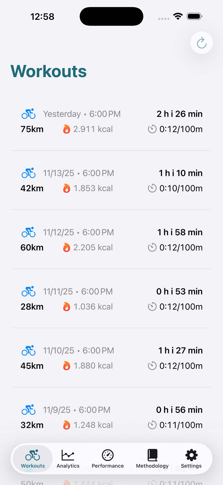
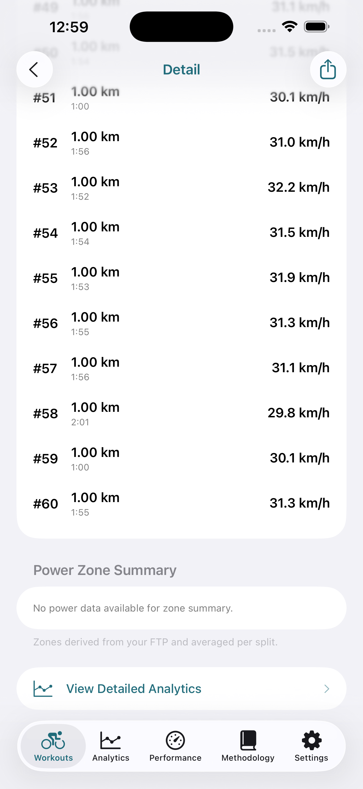
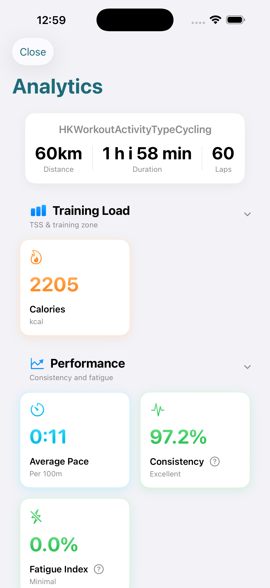
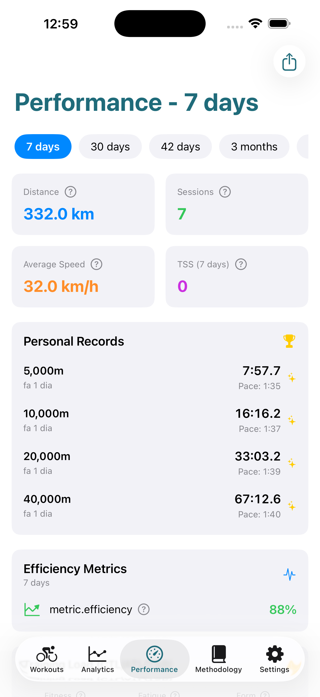

Entraînez-vous Plus Intelligemment, Roulez Plus Vite, Grimpez Plus Fort
Application iOS basée sur la puissance avec FTP, TSS et suivi de performance pour cyclistes sur route et vététistes. Tout traité localement sur votre iPhone avec une confidentialité complète.
✓ Essai gratuit de 7 jours Aucun ✓ Compte requis ✓ Données 100% locales

Métriques de Performance Cycliste Avancées
Analyses cyclistes de niveau professionnel conçues pour les cyclistes de tous niveaux
Métriques de Puissance Scientifiques
FTP (Puissance au Seuil Fonctionnel)détermination de votre seuil, permettant le calcul duScore de Stress d'Entraînement (TSS)et lesuivi de performance CTL/ATL/TSBbasé sur la recherche en sciences du sport éprouvée.
Zones d'entraînement personnalisées
7zones d'entraînement basées sur la puissancepersonnalisées calibrées à votre FTP. Optimisez chaque sortie pour la récupération, le développement aérobie, l'entraînement au seuil ou l'amélioration duVO₂max.
Modes Route & VTT
Analyse spécialisée pour lecyclisme sur route et le VTTavec différents algorithmes de lissage de puissance et métriques spécifiques à chaque discipline adaptées à chaque style de conduite.
Protection Complète de la Confidentialité
Toutes les données cyclistes traitent localement sur votre appareil iOS. Aucun serveur, aucun stockage cloud, aucun suivi. Vous caractérisez et contrôlez complètement vos analyses cyclistes.
Exportation Partout
Exportez vos sorties et métriques de performance cycliste aux formats JSON, CSV, HTML ou PDF. Compatible avec les entraîneurs, tables et plateformes d'entraînement.
Performance Instantanée
Lancement de l'application en moins de 0,35 s avec architecture locale-first. Consultez instantanément vos analyses cyclistes sans attendre les synchronisations ou téléchargements.
Découvrez Bike Analytics en Action
Interface iOS belle et intuitive conçue pour les cyclistes
Vue d'ensemble des Sorties

Analyse Intervalle par Intervalle

Métriques de Performance Avancées

Tendances de Performance

Zones d'Entraînement

Options d'Exportation
Métriques de Performance Cycliste Basées sur la Science
Bike Analytics transforme les données de puissance brute en métriques de performance cycliste exploitables en utilisant le score de stress d'entraînement, la puissance au seuil fonctionnel et des calculs avancés validés par la recherche en sciences du sport
Plongez dans les indicateurs de performance de base du cyclisme →FTP
Puissance au Seuil Fonctionnel - votre puissance soutenable pendant 1 heure
TSS
Le Score de Stress d'Entraînement quantifie l'intensité de l'entraînement
CTL
Charge d'Entraînement Chronique - moyenne mobile sur 42 jours
ATL
Charge d'Entraînement Aiguë - moyenne mobile sur 7 jours
TSB
Balance de Stress d'Entraînement indique l'état de forme
VAM
Velocità Ascensionale Media - mètres verticaux/heure
NP
Puissance moyenne alimentée pour les efforts variables
CP/W'
Puissance Critique & W Prime capacité anaérobie
Tarification Simple et Transparente
Commencez avec un essai gratuit de 7 jours. Annulez à tout moment.
Cycliste Occasionnel
Essai gratuit de 7 jours
- Synchronisation illimitée de sorties
- Toutes les métriques scientifiques (FTP, TSS, CTL/ATL/TSB)
- 7 zones de puissance personnalisées
- Modes d'analyse Route & VTT
- Exportation en JSON, CSV, HTML & PDF
- 100% confidentialité, données locales
- Toutes les futures mises à jour
Cycliste Sérieux
Économisez 8,88 €/an (18% de réduction)
- Synchronisation illimitée de sorties
- Toutes les métriques scientifiques (FTP, TSS, CTL/ATL/TSB)
- 7 zones de puissance personnalisées
- Modes d'analyse Route & VTT
- Exportation en JSON, CSV, HTML & PDF
- 100% confidentialité, données locales
- Toutes les futures mises à jour
- Uniquement 3,25 €/mois
Analyses Cyclistes Confidentielles pour Athlètes Sérieux
Métriques de performance cycliste professionnelles sans la complexité
Protocole de Test FTP
Protocole de test FTP de 20 minutes intégré pour déterminer votre puissance au fonctionnel. Répétez toutes les 6-8 semaines pour suivre les progrès et ajuster automatiquement les zones d'entraînement cycliste.
Application Cycliste iOS Native
Construite avec SwiftUI pour des performances fluides et une intégration iOS. Synchronisation transparente avec l'application Health pour les analyses cyclistes, support des widgets et langage de design Apple familier.
Métriques Basées sur la Recherche
Toutes les métriques de performance cycliste basées sur la recherche en sciences du sport appliquées par les paires. FTP d'Andrew Coggan, score de stress d'entraînement avec formule IF, modèles CTL/ATL éprouvés.
Rapports Pour Entraîneurs
Exportez des rapports d'analyses cyclistes détaillés pour les entraîneurs. Partagez des CV HTML par email, CSV pour analyser tableau ou PDF pour journaux d'entraînement et dossiers de performance.
Fonctionne Partout
Route ou sentier, plat ou montagne. Bike Analytics adapte les métriques de puissance à tous les types de cyclisme avec des modes spécialisés route et VTT pour une analyse de performance précise.
Toujours en Amélioration
Mises à jour régulières avec nouvelles métriques de performance cycliste basées sur les retours utilisateurs. Les ajouts récents incluent le VAM vitesse d'ascension, des modèles de puissance critique et des options d'exportation améliorées.
Questions fréquemment posées
Comment cette application d'analyses cyclistes obtient-elle mes données ?
Bike Analytics se synchronise avec Apple Health pour importer les entraînements cyclistes enregistrés par n'importe quel appareil ou application compatible. Cela inclut les ordinateurs de vélo, les home trainers intelligents et les entrées manuelles. L'application traite ces données localement pour calculer des métriques de performance cycliste avancées.
Qu'est-ce que le FTP et comment le testeur ?
Le FTP (Puissance au Seuil Fonctionnel) est la puissance maximale que vous pouvez maintenir pendant environ une heure. L'application inclut un protocole de test FTP de 20 minutes : échauffez-vous soigneusement, puis roulez à effort maximal soutenable pendant 20 minutes. Votre FTP est à 95% de la puissance moyenne. Répétez tous les 6-8 semaines pour suivre les progrès et mettre à jour les zones d'entraînement.
Ai-je besoin d'un capteur de puissance pour utiliser Bike Analytics ?
Oui. Bike Analytics nécessite des données de puissance d'un capteur de puissance pour des calculs précis de FTP, TSS et zones d'entraînement.Compatible avec tous les capteurs de puissance qui se synchronisent avec Apple Health via des ordinateurs de vélo ou des home trainers intelligents.
Comment le TSS cycliste est-il calculé ?
Le Score de Stress d'Entraînement (TSS) pour le cyclisme est calculé en utilisant les données de puissance et votre FTP. La formule considère à la fois l'intensité (puissance normalisée vs FTP) et la durée pour quantifier le stress de l'entraînement. Cela permet un suivi précis de la forme via CTL, une surveillance de la fatigue via ATL et une évaluation de l'état via TSB.
Quelle est la différence entre les analyses route et VTT ?
Bike Analytics offre des modes d'analyse spécialisés pour le cyclisme sur route et le VTT. Le mode route utilise un lissage de puissance standard de 30 secondes, tandis que le mode VTT applique différents algorithmes pour tenir compte du terrain et des efforts hautement variables typiques de la conduite hors route. Chaque mode fournit des métriques spécifiques à la discipline.
Mes données cyclistes sont-elles privées ?
Oui. Bike Analytics traite toutes les données cyclistes localement sur votre iPhone. Il n'y a pas de serveurs externes, pas de comptes cloud, pas de transferts de données. Vous contrôlez les exportations : générez des fichiers JSON, CSV, HTML ou PDF avec vos métriques de performance cycliste et partagez-les comme vous le souhaitez.
Puis-je exporter mes données cyclistes pour les partager avec des entraîneurs ?
Absolument. Exportez les sorties et métriques de performance dans plusieurs formats : JSON pour développeurs, CSV pour tableaux, HTML pour visualisation web ou PDF pour rapports imprimables. Partagez par email, messagerie ou toute méthode de partage de fichiers que vous préférez.
Quelle est la différence entre les forfaits mensuels et annuels ?
Les deux forfaits offrent des fonctionnalités identiques : toutes les métriques de performance cycliste, zones d'entraînement illimitées, modes route & VTT, exportations multiples et mises à jour gratuites. La seule différence est le prix : l'annuel économise 18% (équivalent à 3,25 €/mois vs 3,99 €/mois).
Puis-je annuler mon abonnement à tout moment ?
Oui. Les abonnements sont gérés via l'App Store, vous pouvez donc annuler à tout moment depuis Paramètres → [Votre Nom] → Abonnements. Si vous annulez, vous conservez l'accès jusqu'à la fin de votre période de facturation actuelle.
Prêt à Transformer Votre Performance Cycliste ?
Rejoignez des milliers de cyclistes utilisant des analyses scientifiques basées sur la puissance pour améliorer leurs performances. Commencez votre essai gratuit de 7 jours de cette application cycliste iOS axée sur la confidentialité dès aujourd'hui.
En Savoir Plus sur les Métriques de Performance Cycliste
Plongez plus profondément dans la science derrière les analyses cyclistes
Puissance au Seuil Fonctionnel
Comprenez comment le FTP détermine votre puissance seuil et pourquoi c'est crucial pour l'entraînement cycliste structuré et le suivi de performance.
En savoir plus sur le FTP →Score de Stress d'Entraînement
Découvrez comment TSS, CTL, ATL et TSB vous éliminez à équilibrer le stress d'entraînement, gérez la fatigue et optimisez la performance cycliste.
Explorer le TSS →Zones d'Entraînement Basées sur la Puissance
Guide complet des 7 zones de puissance : récupération active, endurance, tempo, seuil, VO2max, anaérobie et neuromusculaire.
Voir les Zones d'Entraînement →Qu'est-ce que le VO2max ?
Apprenez-en davantage sur le VO2max pour les cyclistes, commentez le testeur, les valeurs moyennes par âge et les méthodes éprouvées pour améliorer votre capacité aérobie.
Comprendre le VO2max →Analyses Route vs VTT
Comprenez les différences entre les analyses de cyclisme sur route et de VTT, y compris le lissage de puissance et les métriques spécifiques à chaque discipline.
Comparer les Disciplines →Modèle de Puissance Critique
Découvrez la Puissance Critique (CP) et W Prime (W') pour une modélisation avancée de la performance et la prédiction du temps jusqu'à l'épuisement à différentes puissances.
Apprendre CP/W' →